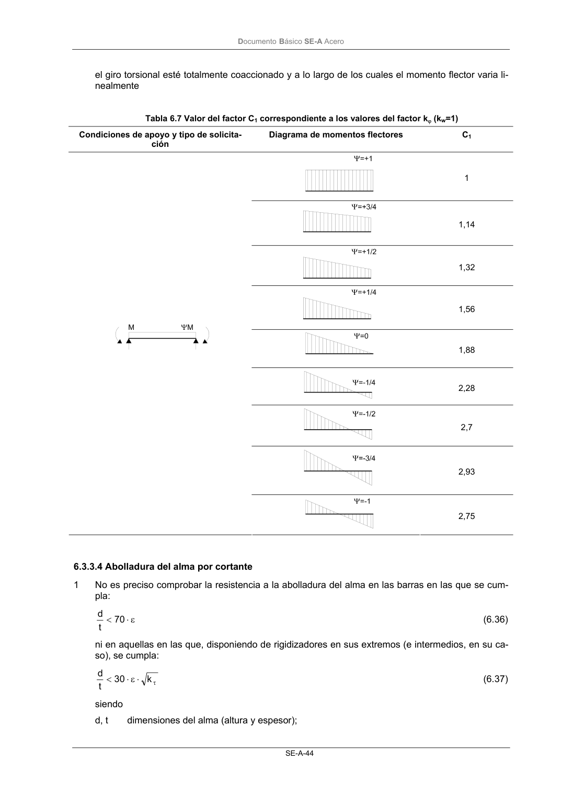

DB-SE-A · 6.3.3.4 Abolladura del alma por cortante · versión 2007-10-23
SHA256: 9ed9ea694aabfbda3bfbbef40dfe9223fde05d13c35bc2ba9751e5a96a22a64f · página física 46 de 168 · métodos de encabezado
solo si están cotejados.
Formatos: Markdown · JSON de bloques · PDF p. 46 · imagen PNG
Documento Básico SE-A Acero SE-A-44 el giro torsional esté totalmente coaccionado y a lo largo de los cuales el momento flector varia li- nealmente Tabla 6.7 Valor del factor C1 correspondiente a los valores del factor kϕ (kw=1) Condiciones de apoyo y tipo de solicita- ción Diagrama de momentos flectores C1 1 1,14 1,32 1,56 1,88 2,28 2,7 2,93 2,75 6.3.3.4 Abolladura del alma por cortante 1 No es preciso comprobar la resistencia a la abolladura del alma en las barras en las que se cum- pla: ε ⋅ < 70 t d (6.36) ni en aquellas en las que, disponiendo de rigidizadores en sus extremos (e intermedios, en su ca- so), se cumpla: τ ⋅ ε ⋅ < k 30 t d (6.37) siendo d, t dimensiones del alma (altura y espesor);
